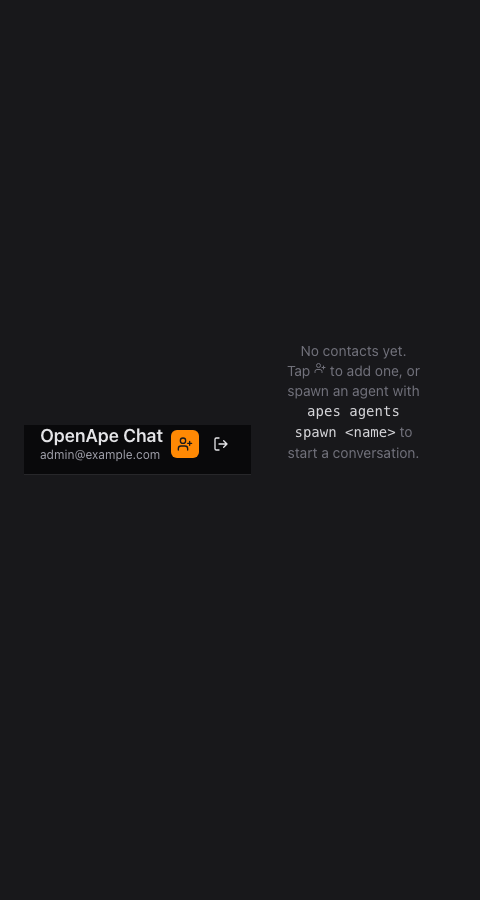
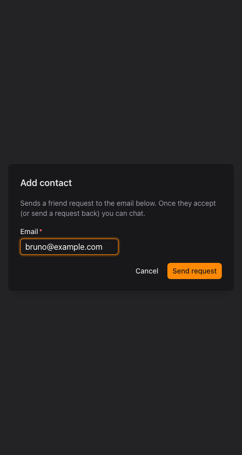
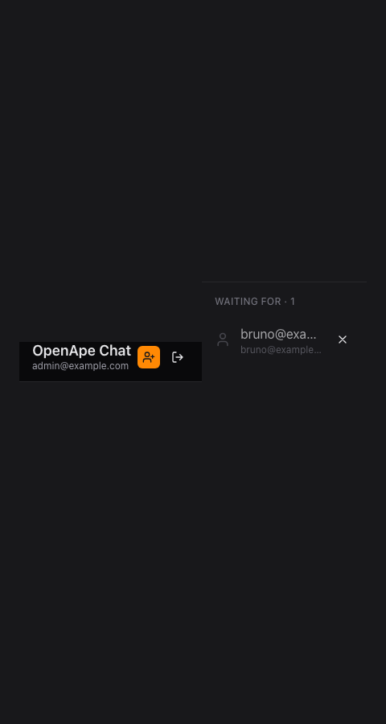
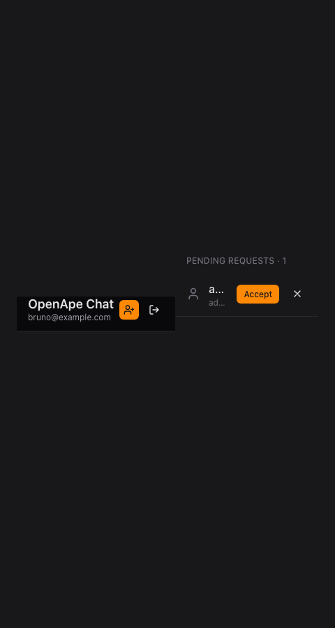

1 Select Add contact
The list stays empty until you add someone.

You can only talk to people who have agreed to talk to you
Chat starts with a request. Nobody can write to you before you have accepted them.
The list stays empty until you add someone.

Use the address they sign in with.

It waits under "Waiting for" until the other side answers.

Requests appear at the top of the contact list.
Anyone waiting for an answer is listed first.

From now on both sides can write to each other.